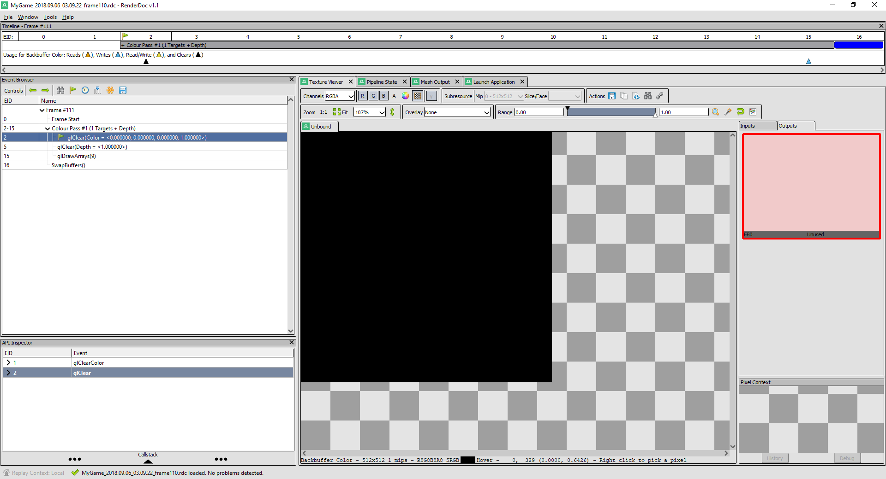
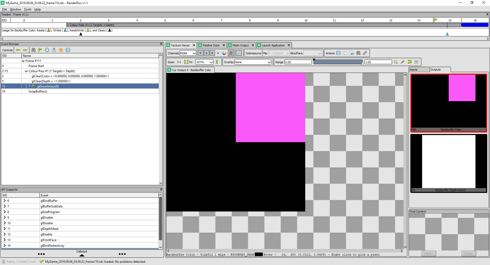
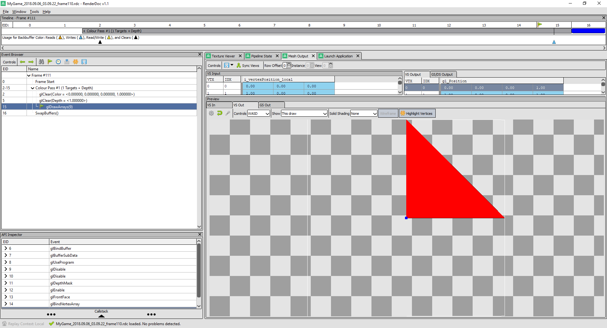

Summary
During this assignment, I practiced how to make a platform-independent interface. At the beginning, I searched what member variables mesh should have in OpenGL and D3D, put them with the right preprocessor. Then I searched for the part of initializing, cleaning, drawing a mesh in Graphics.d3d.cpp and Graphics.gl.cpp and put them into separate cpp files. I did the same thing for effect class.
The process of initializing, cleaning, drawing(binding) on different platforms is quite similar, only the specific implementations are different.
Mesh
- For initialization, we need to initialize an object to hold the mesh, then have some buffer to hold our vertices data and have some format for GPU to deal with this buffer.
- For cleanup, release or delete all the resource we create in initialization function.
- For rendering, set some properties and call a “draw” function to draw.
Effect
- For initialization, we need to load vertex shader and fragment shader from disk. Then on D3D, it’s just a simple initialize function to get a RenderState. But on OpenGL, we need to create a program, attach the shaders to it, link shaders together and get a RenderState eventually.
- For cleanup, release or delete all the resource we create in initialization function.
- For binding, we need to set two shaders on D3D, set the program we created on OpenGL. Call a function to “bind” on both platforms.
I also learned the coordinate system and different of it between OpenGL and D3D, which is OpenGL uses right-hand coordinate system and D3D uses left-hand coordinate system.
Differences between Graphics.d3d.cpp and Graphics.gl.cpp
There are two remained differences between Graphics.d3d.cpp and Graphics.gl.cpp:
- The implementations for two platforms to clean buffers and swap buffers are different. We could create another class to handle these operations separately as what we did to mesh.
- There is a specific property in D3D, which is view. There is no “view” in OpgnGl. Therefore we could create a class to handle every operations of view in D3D, all the files of this class are ignored in OpenGL platform.
Controls
Press and hold SPACE to make color animation slow. Release to return to normal speed.
Platform-independent Interfaces
s_effect.Bind();
s_mesh.Render();
// Initialize the shading data
{
if (!(result == s_effect.Initialize()))
{
EAE6320_ASSERT(false);
goto OnExit;
}
}
// Initialize the geometry
{
if (!(result = s_mesh.Initialize()))
{
EAE6320_ASSERT(false);
goto OnExit;
}
}
Screen Shot
{kind=link}
{kind=link}



{kind=link}

{kind=link}

{kind=link}
Questions
The mistake I’ve made when I was doing my assignment was that I forgot the different coordinate system. I was trying to put the vertices of my triangles in the header file and using it in two different platform. Since the vertices were not changed between platforms, I got the right result in OpenGL and got a full black screen in D3D. I’m wondering if there’s a better way to deal with this problem rather than put vertices in cpp files separately.